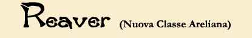
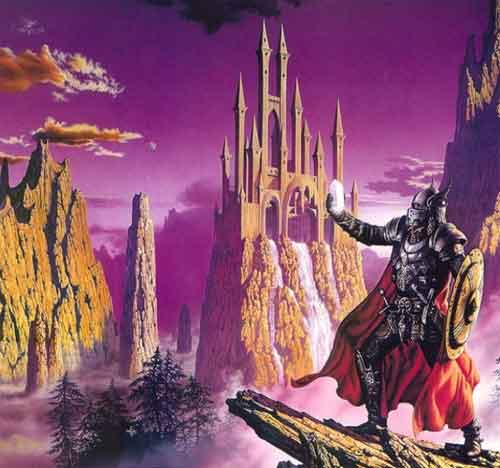
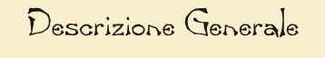
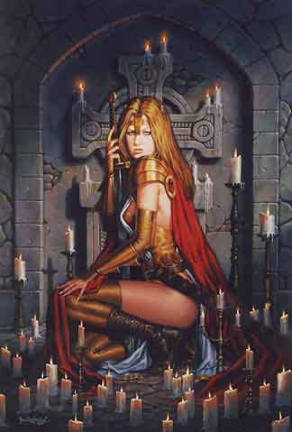
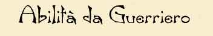
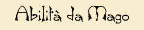
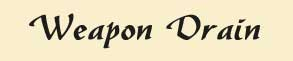

Abilità minime Forza 9, Intelligenza 12 Abilità primarie Forza e Intelligenza (con 16 ad entrambe bonus 10% esperienza) Razze permesse Umani Competenze Generali, Guerrieri, Maghi Allineamenti Qualsiasi allineamento

I Reaver sono una classe di personaggi ibridi. Sono la risposta umana alla innata capacità mentale dei semi-umani di accrescere la loro bravura contemporaneamente come maghi e guerrieri (multi-classe). Attraverso un intenso addestramento e sacrificando alcune capacità tipiche dei guerrieri la civiltà di Pergar è riuscita a creare questa una classe unica di guerrieri-maghi umani !
In effetti i Reaver sono principalmente combattenti, la loro abilità nell'uso delle armi anche se non è pari a quella dei guerrieri puri è molto elevata e sono temibili in corpo a corpo. A differenza dei comuni guerrieri, però, i Reaver acquisiscono capacità magiche e sono in grado di imparare la magia (devono avere un normale libro di incantesimi e usare le regole dei maghi). Mano mano che salgono di livello le loro capacità magiche aumentano e Reaver di alto livello possono lanciare magie abbastanza devastanti.
Il più grave problema del Reaver è quello di non poter lanciare le magie con indosso corazze e con impugnate le armi o lo scudo. Alcuni di loro, una volta che possono lanciare le magie dei maghi e sono in grado di proteggersi con la magia, infatti, abbandonano le corazze, altri studiano magie di lunga durato che possono utilizzare prima di indossare le armature. E' quindi vitale per i Reaver la conoscenza della competenza Rapid Arming che gli permette di posare le armi senza perdere il round al fine di lanciare le magie che conoscono. Inoltre i Reaver hanno sviluppato una particolare arte di combattimento che permette loro di lanciare magie utilizzando alcuni tipo di corazza che solo costoro possono imparare. Quest'arte prende il nome di Arte della Magia in Battaglia. Al primo grado, che costa al Reaver 200 punti arma, costoro potranno ridurre la penalità di fallimento nel lancio di incantesimi degli utenti di magia (link) del 20%. Al secondo ed ultimo grado, che costa al Reaver ulteriori 300 punti arma, costoro potranno ridurre la penalità di fallimento nel lancio di incantesimi degli utenti di magia (link) del 50%.
I Reaver ottengono 1 dado da 8 di punti ferita per livello di esperienza, tutti i Reaver dopo il 9° livello di esperienza ottengono 3 punti ferita per livello e non prendono più punti ferita addizionali come bonus per alto punteggio in costituzione.
Livello di esperienza XP Necessari Hit Dice (d8) 1° 0 1 2° 2,250 2 3° 4,500 3 4° 9,000 4 5° 21,000 5 6° 42,000 6 7° 79,000 7 8° 147,500 8 9° 283,750 9 10° 562,500 9+3 11° 843,750 9+6 12° 1,187,500 9+9 13° 1,362,500 9+12 14° 1,650,000 9+15 15° 1,937,500 9+18 16° 2,225,000 9+21 17° 2,512,500 9+24 18° 2,800,000 9+27 19° 3,087,500 9+30 20° 3,375,000 9+33 Una volta giunti ai livelli di esperienza : 5°, 7°, 9°,11° i Reaver devono effettuare oltre al normale training da fighter anche un training supplementare da wizard con un maestro mago, per calcolare il training (compreso il livello minimo del maestro) si deve simulare che il Reaver voglia divenire un mago rispettivamente del 1°, 3°, 5° e 7° livello di esperienza. Si noti che il Reaver deve effettuare prima il training da fighter al termine del quale avrà acquisito il nuovo livello di esperienza (con thac0, punti ferita, punti magia, ecc...) dovrà però effettuare questo training supplementare da mago unicamente per ottenere la capacità di usare magie del nuovo livello di potere a cui ha accesso (fino a che non lo farà non potrà usare i punti magia ottenuti nell'ultimo livello di potere, né imparare incantesimi di quel livello di potere).


Occorre tenere presente che i Reaver sono fondamentalmente combattenti e solo parzialmente utenti di magia, per questo motivo i Reaver utilizzano come base tutte le regole e le abilità dei guerrieri (fighter) con le sole particolarità riportate di seguito :
* I Reaver utilizzano il dado da 8 per i punti ferita anziché quello da 10.
* I Reaver utilizzano i tiri salvezza dei combattenti ma, a partire dal 5° livello, utilizzano il tiro salvezza su magia di un mago di 4 livelli inferiori.* I Reaver possono specializzarsi ma non possono in alcun caso raggiungere il grado di competenza in armi del Gran Maestro.
* I Reaver non ottengono i cinque punti combattimento bonus, come i fighter, quando raggiungono l'8° livello di esperienza.
* I Reaver ottengono 750 punti arma di partenza invece che 800 come i fighter.

A partire dal 5° livello di esperienza i Reaver acquisiscono le abilità tipiche dei maghi. Il Reaver avrà le capacità magiche di un mago di 4 livelli inferiori. Per poter lanciare le magie i Reaver utilizzano tutte le regole e le restrizioni dei maghi, sia per impararle che quelle relative ai punti magia, allo studio e ai libri magici. Un Reaver del 9° livello di esperienza avrà quindi le stesse capacità di mago del 5° livello di esperienza e così via...
A partire dal 5° livello di esperienza inoltre (dopo acquisito le capacità dei maghi) i Reaver sono in grado di utilizzare gli oggetti magici dei maghi e di lanciare pergamene dei maghi come un mago di 4 livelli inferiori.
A differenza dei maghi però :
* Non possono in nessun caso raggiungere il quarto grado di conoscenza in nessuna scuola di magia e livello di potere.
* Non possono in nessun caso imparare magie di 5° livello di potere o superiore. Continueranno a prendere però i punti magia dei primi 4 livelli di esperienza secondo la normale progressione dei maghi.
* Non sono in grado di inventare con il metodo di ricerca nuovi incantesimi dei maghi o ricercare ex novo quelli già esistenti.
* Non sono in grado né di insegnare la magia né di effettuare training come Maestri per gli altri utenti di magia.
* Non potranno in nessun caso imparare a creare oggetti magici, pozioni o pergamene.

I Reaver sono dotati inoltre di un potere speciale. Una volta al giorno possono decidere di infondere l'arma che impugnano di energia negativa. Tale operazione si esegue come il lancio di un incantesimo a casting time 3. Richiede quindi concentrazione e a tale abilità si applicano tutte le restrizioni del lancio delle magie. Se la magia è lanciata con successo l'arma che il Reaver impugnava sarà circondata da fasce ondulatorie di energia negativa di colore violaceo e visibili ad occhio nudo. La magia durerà 2d4 rounds a partire dal round successivo a quello di lancio. Se durante la magia il Reaver colpirà un avversario gli procurerà 1d6 danni addizionali da energia negativa, inoltre succhierà energia curandosi per la metà dei danni negativi prodotti calcolati per difetto (ossia si curerà 1 punto ferita se provocherà 1,2 o 3 danni negativi, 2 punti ferita se provocherà 4 o 5 danni negativi, 3 punti ferita se provocherà 6 danni negativi). Non morti e costruiti sono immuni a tale magia. Si noti che i danni negativi sono prodotti prima dei danni fisici dell'arma, inoltre il Reaver non potrà risucchiare più dei punti ferita residui del mostro. Si osservi, infine, che ogni volta che il Reaver attiva questo potere lo stesso accumula un punto negativo (link).